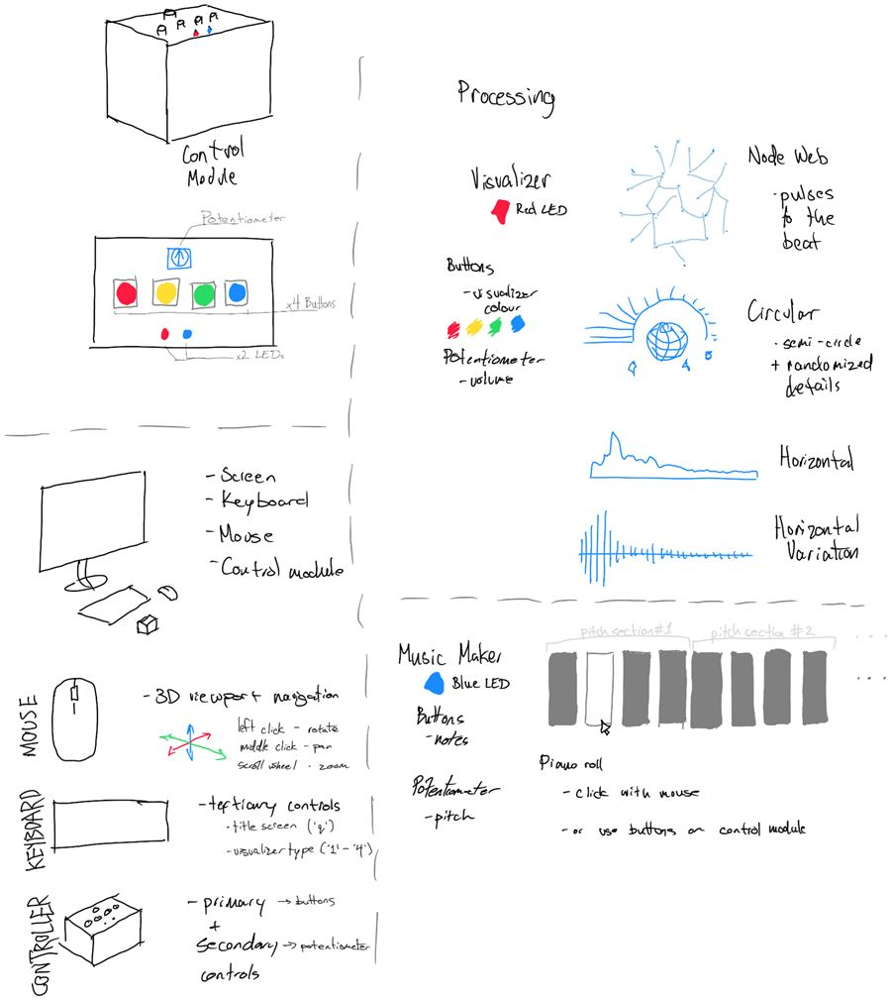
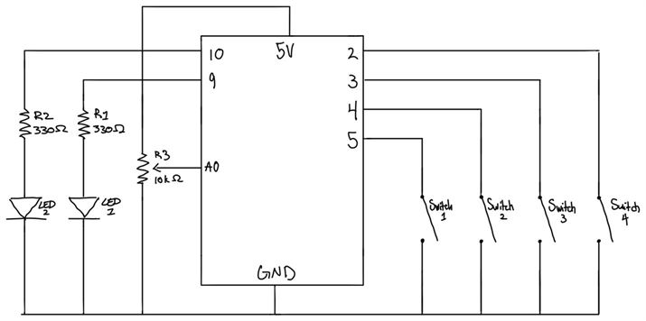
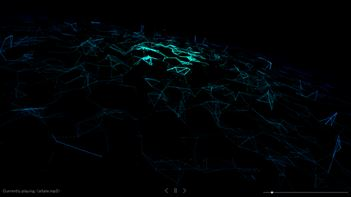
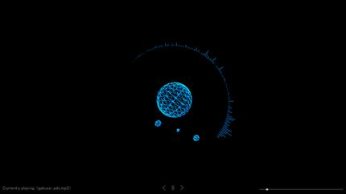
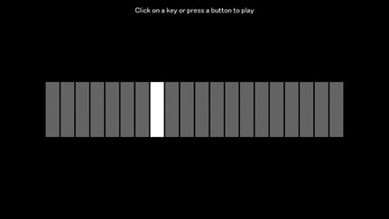

Music Visualizer
Skills
Arduino, Processing, OnShape
Time
Summer Semester 2021
Individual final project
Contributions
Created an Arduino controller to interact with Processing and visualize music.
Context
//01As per the project requirements, we had to use physical Arduino hardware to interact with Processing-generated visuals. As a fan of music, I have been interested in music visualization and, at the time, I was learning generative art. I thought, "why not make a generative music visualizer?"
Process
//02The first step was defining what I wanted to achieve, and what I envisioned the system to look like. I know I wanted to create a visualizer, but I also added in a midi-piano option as a challenge.
I looked at the items available in my kit and decided that my control module would have 4 buttons, a potentiometer, and two LEDs for visual indicators.
The buttons are used as primary controllers, either for changing colors, or playing notes.
The potentiometer is an analog controller for volume and pitch shifting.
Finally, the LEDs are used to tell the user what mode they are currently on in the program.
In addition to the main Arduino control, users can also interact with the visualizer through their keyboard and mouse.
The mouse is used to navigate in 3D space around the music visualizer. The keyboard is used to change the type of visualizer or return to the title screen.
The first part I tackled was the music visualizer. Using Processing's minim library, I used a Fast Fourier Transform (FFT) algorithm to analyze the music and output values based on the sound spectrum/bands.
Then, the trickier part was figuring out how exactly I wanted to visualize the music. The node web is relatively simple in 2D, however in 3D space, I needed to constrain the nodes to a specific area. Otherwise, they would move too far and continue moving even when the music stopped.
To keep the nodes from moving too far away from their original position, I stored the original position when the node is initialized (they are all random), for the node to return to after each movement.
Each of the nodes move according to the frequency of the music, and a force is applied randomly to move it in the z-direction. At the same time, an arrival function is called continuously to move the point back to where it originally was.
I also created other visualizers, which were significantly easier to make.
On the Arduino side, I didn't encounter many set backs. As it was a mostly hands-on part of the project, the main difficulty was getting the wires to fit in the module.
I designed the module based on the size of the Arduino board, however, I forgot to account for the length and space that the wires would take up. In addition, there was no space for a breadboard, so connections had to be directly between the Arduino and the component.
I solved this by looping some of the wires into circles so that they would take up less space and be easier to manage.
Result
//03The final music visualizer is able to identify music in the project folder, and play through the list automatically. Users can rotate around the visualizer, change colours, and change volume. They can also play around with a midi-piano via the physical buttons on the Arduino controller, and use the potentiometer to shift the pitch of the notes up or down.
Reflection
//04Throughout this project, I learnt a lot about circuits and how serial communication works between hardware/software. I think my programming skills were more prominent than hardware results.
If I had more time, I would revise the wiring because a a sizeable portion of the time (outside of coding) was spent figuring out how to connect the components directly without a breadboard.
Overall, it was a fun project - seeing the hardware and software come together in the end was gratifying. Especially being able to play notes in real time.
On the other hand, I didn't quite achieve what I was looking for in the midi-piano part of the program - I was originally thinking of using arrays or classes to create and record melodies.
However, this along with a visualizer would have been too much for the time that I had. Nonetheless, I learnt a lot about electronics and coding.